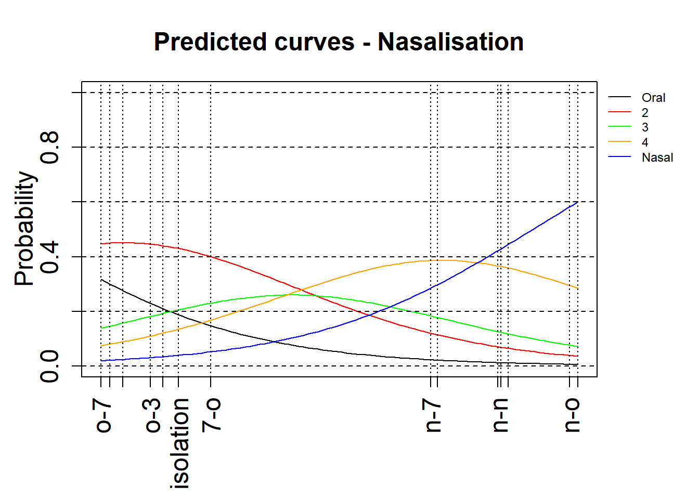
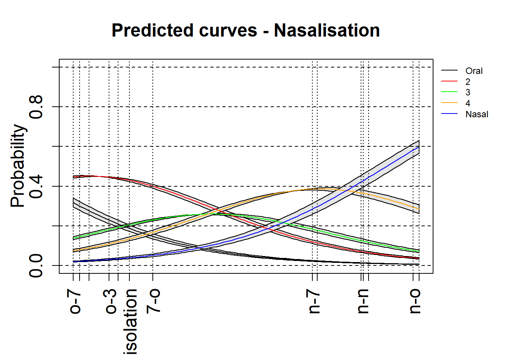
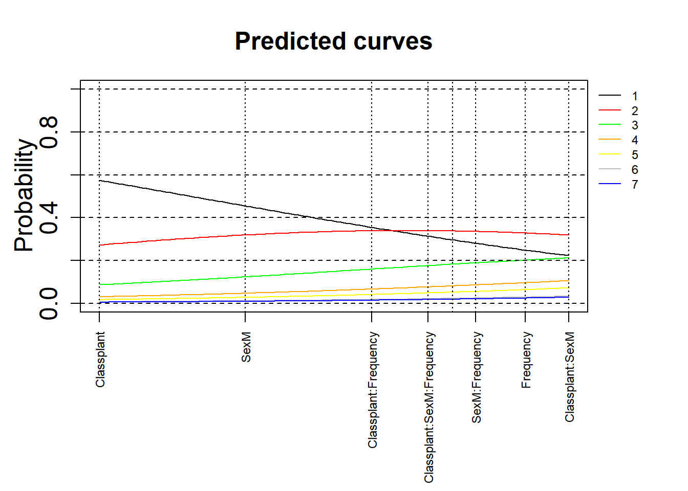
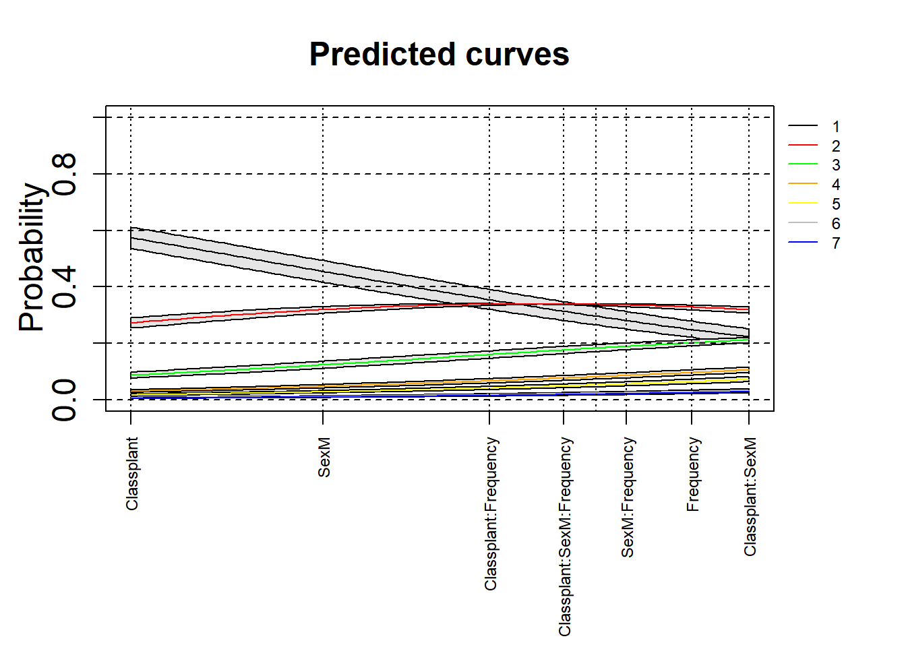

3.5 Cumulative Logit Link Models
These models work perfectly with rating data. Ratings are inherently ordered, 1, 2, … n, and expect to observe an increase (or decrease) in overall ratings from 1 to n. To demonstrate this, we will use an example using the package “ordinal”.
We use two datasets. We previously ran these two models, however, in this subset of the full dataset, we did not take into account the fact that there were multiple producing speakers and items.
3.5.1 Ratings of percept of nasality
The first comes from a likert-scale a rating experiment where six participants rated the percept of nasality in the production of particular consonants in Arabic. The data came from nine producing subjects. The ratings were from 1 to 5, with 1 reflecting an oral percept; 5 a nasal percept.
3.5.1.1 Importing and pre-processing
We start by importing the data and process it. We change the reference level in the predictor
## # A tibble: 405 × 5
## Response Context Subject Item Rater
## <dbl> <chr> <chr> <chr> <chr>
## 1 2 n-3 p04 noo3-w R01
## 2 4 isolation p04 noo3-v R01
## 3 2 o-3 p04 djuu3-w R01
## 4 4 isolation p04 djuu3-v R01
## 5 3 n-7 p04 nuu7-w R01
## 6 3 isolation p04 nuu7-v R01
## 7 1 3--3 p04 3oo3-w R01
## 8 2 isolation p04 3oo3-v R01
## 9 2 o-7 p04 loo7-w R01
## 10 1 o-3 p04 bii3-w R01
## # ℹ 395 more rowsrating <- rating %>%
mutate(Response = factor(Response),
Context = factor(Context)) %>%
mutate(Context = relevel(Context, "isolation"))
rating## # A tibble: 405 × 5
## Response Context Subject Item Rater
## <fct> <fct> <chr> <chr> <chr>
## 1 2 n-3 p04 noo3-w R01
## 2 4 isolation p04 noo3-v R01
## 3 2 o-3 p04 djuu3-w R01
## 4 4 isolation p04 djuu3-v R01
## 5 3 n-7 p04 nuu7-w R01
## 6 3 isolation p04 nuu7-v R01
## 7 1 3--3 p04 3oo3-w R01
## 8 2 isolation p04 3oo3-v R01
## 9 2 o-7 p04 loo7-w R01
## 10 1 o-3 p04 bii3-w R01
## # ℹ 395 more rows3.5.1.2 Our first model
We run our first clm model as a simple, i.e., with no random effects
## formula: Response ~ Context
## data: .
##
## link threshold nobs logLik AIC niter max.grad cond.H
## logit flexible 405 -526.16 1086.31 5(0) 3.61e-09 1.3e+02
##
## Coefficients:
## Estimate Std. Error z value Pr(>|z|)
## Context3--3 -0.1384 0.5848 -0.237 0.8130
## Context3-n 3.5876 0.4721 7.600 2.96e-14 ***
## Context3-o -0.4977 0.3859 -1.290 0.1971
## Context7-n 2.3271 0.5079 4.582 4.60e-06 ***
## Context7-o 0.2904 0.4002 0.726 0.4680
## Contextn-3 2.8957 0.6685 4.331 1.48e-05 ***
## Contextn-7 2.2678 0.4978 4.556 5.22e-06 ***
## Contextn-n 2.8697 0.4317 6.647 2.99e-11 ***
## Contextn-o 3.5152 0.4397 7.994 1.30e-15 ***
## Contexto-3 -0.2540 0.4017 -0.632 0.5272
## Contexto-7 -0.6978 0.3769 -1.851 0.0641 .
## Contexto-n 2.9640 0.4159 7.126 1.03e-12 ***
## Contexto-o -0.6147 0.3934 -1.562 0.1182
## ---
## Signif. codes: 0 '***' 0.001 '**' 0.01 '*' 0.05 '.' 0.1 ' ' 1
##
## Threshold coefficients:
## Estimate Std. Error z value
## 1|2 -1.4615 0.2065 -7.077
## 2|3 0.4843 0.1824 2.655
## 3|4 1.5492 0.2044 7.578
## 4|5 3.1817 0.2632 12.0893.5.1.3 Testing significance
We can evaluate whether “Context” improves the model fit, by comparing a null model with our model. Of course “Context” is improving the model fit.
## Likelihood ratio tests of cumulative link models:
##
## formula: link: threshold:
## mdl.clm.Null Response ~ 1 logit flexible
## mdl.clm Response ~ Context logit flexible
##
## no.par AIC logLik LR.stat df Pr(>Chisq)
## mdl.clm.Null 4 1281.1 -636.56
## mdl.clm 17 1086.3 -526.16 220.8 13 < 2.2e-16 ***
## ---
## Signif. codes: 0 '***' 0.001 '**' 0.01 '*' 0.05 '.' 0.1 ' ' 13.5.1.4 Model’s fit
print(tab_model(mdl.clm, file = paste0("outputs/mdl.clm.html")))
webshot(paste0("outputs/mdl.clm.html"), paste0("outputs/mdl.clm.png"))
3.5.1.5 Interpreting a cumulative model
As a way to interpret the model, we can look at the coefficients and make sense of the results. A CLM model is a Logistic model with a cumulative effect. The “Coefficients” are the estimates for each level of the fixed effect; the “Threshold coefficients” are those of the response. For the former, a negative coefficient indicates a negative association with the response; and a positive is positively associated with the response. The p values are indicating the significance of each level. For the “Threshold coefficients”, we can see the cumulative effects of ratings 1|2, 2|3, 3|4 and 4|5 which indicate an overall increase in the ratings from 1 to 5.
3.5.1.5.2 No confidence intervals
We use a modified version of a plotting function that allows us to visualise the effects. For this, we use the base R plotting functions. The version below is without confidence intervals.
par(oma=c(1, 0, 0, 3),mgp=c(2, 1, 0))
xlimNas = c(min(mdl.clm$beta), max(mdl.clm$beta))
ylimNas = c(0,1)
plot(0,0,xlim=xlimNas, ylim=ylimNas, type="n", ylab=expression(Probability), xlab="", xaxt = "n",main="Predicted curves - Nasalisation",cex=2,cex.lab=1.5,cex.main=1.5,cex.axis=1.5)
axis(side = 1, at = c(0,mdl.clm$beta),labels = levels(rating$Context), las=2,cex=2,cex.lab=1.5,cex.axis=1.5)
xsNas = seq(xlimNas[1], xlimNas[2], length.out=100)
lines(xsNas, plogis(mdl.clm$Theta[1] - xsNas), col='black')
lines(xsNas, plogis(mdl.clm$Theta[2] - xsNas)-plogis(mdl.clm$Theta[1] - xsNas), col='red')
lines(xsNas, plogis(mdl.clm$Theta[3] - xsNas)-plogis(mdl.clm$Theta[2] - xsNas), col='green')
lines(xsNas, plogis(mdl.clm$Theta[4] - xsNas)-plogis(mdl.clm$Theta[3] - xsNas), col='orange')
lines(xsNas, 1-(plogis(mdl.clm$Theta[4] - xsNas)), col='blue')
abline(v=c(0,mdl.clm$beta),lty=3)
abline(h=0, lty="dashed")
abline(h=0.2, lty="dashed")
abline(h=0.4, lty="dashed")
abline(h=0.6, lty="dashed")
abline(h=0.8, lty="dashed")
abline(h=1, lty="dashed")
legend(par('usr')[2], par('usr')[4], bty='n', xpd=NA,lty=1, col=c("black", "red", "green", "orange", "blue"),
legend=c("Oral", "2", "3", "4", "Nasal"),cex=0.75)
3.5.1.5.3 With confidence intervals
Here is an attempt to add the 97.5% confidence intervals to these plots. This is an experimental attempt and any feedback is welcome!
par(oma=c(1, 0, 0, 3),mgp=c(2, 1, 0))
xlimNas = c(min(mdl.clm$beta), max(mdl.clm$beta))
ylimNas = c(0,1)
plot(0,0,xlim=xlimNas, ylim=ylimNas, type="n", ylab=expression(Probability), xlab="", xaxt = "n",main="Predicted curves - Nasalisation",cex=2,cex.lab=1.5,cex.main=1.5,cex.axis=1.5)
axis(side = 1, at = c(0,mdl.clm$beta),labels = levels(rating$Context), las=2,cex=2,cex.lab=1.5,cex.axis=1.5)
xsNas = seq(xlimNas[1], xlimNas[2], length.out=100)
#+CI
lines(xsNas, plogis(mdl.clm$Theta[1]+(summary(mdl.clm)$coefficient[,2][[1]]/1.96) - xsNas), col='black')
lines(xsNas, plogis(mdl.clm$Theta[2]+(summary(mdl.clm)$coefficient[,2][[2]]/1.96) - xsNas)-plogis(mdl.clm$Theta[1]+(summary(mdl.clm)$coefficient[,2][[1]]/1.96) - xsNas), col='red')
lines(xsNas, plogis(mdl.clm$Theta[3]+(summary(mdl.clm)$coefficient[,2][[3]]/1.96) - xsNas)-plogis(mdl.clm$Theta[2]+(summary(mdl.clm)$coefficient[,2][[2]]/1.96) - xsNas), col='green')
lines(xsNas, plogis(mdl.clm$Theta[4]+(summary(mdl.clm)$coefficient[,2][[4]]/1.96) - xsNas)-plogis(mdl.clm$Theta[3]+(summary(mdl.clm)$coefficient[,2][[3]]/1.96) - xsNas), col='orange')
lines(xsNas, 1-(plogis(mdl.clm$Theta[4]+(summary(mdl.clm)$coefficient[,2][[4]]/1.96) - xsNas)), col='blue')
#-CI
lines(xsNas, plogis(mdl.clm$Theta[1]-(summary(mdl.clm)$coefficient[,2][[1]]/1.96) - xsNas), col='black')
lines(xsNas, plogis(mdl.clm$Theta[2]-(summary(mdl.clm)$coefficient[,2][[2]]/1.96) - xsNas)-plogis(mdl.clm$Theta[1]-(summary(mdl.clm)$coefficient[,2][[1]]/1.96) - xsNas), col='red')
lines(xsNas, plogis(mdl.clm$Theta[3]-(summary(mdl.clm)$coefficient[,2][[3]]/1.96) - xsNas)-plogis(mdl.clm$Theta[2]-(summary(mdl.clm)$coefficient[,2][[2]]/1.96) - xsNas), col='green')
lines(xsNas, plogis(mdl.clm$Theta[4]-(summary(mdl.clm)$coefficient[,2][[4]]/1.96) - xsNas)-plogis(mdl.clm$Theta[3]-(summary(mdl.clm)$coefficient[,2][[3]]/1.96) - xsNas), col='orange')
lines(xsNas, 1-(plogis(mdl.clm$Theta[4]-(summary(mdl.clm)$coefficient[,2][[4]]/1.96) - xsNas)), col='blue')
# fill area around CI using c(x, rev(x)), c(y2, rev(y1))
polygon(c(xsNas, rev(xsNas)),
c(plogis(mdl.clm$Theta[1]+(summary(mdl.clm)$coefficient[,2][[1]]/1.96) - xsNas), rev(plogis(mdl.clm$Theta[1]-(summary(mdl.clm)$coefficient[,2][[1]]/1.96) - xsNas))), col = "gray90")
polygon(c(xsNas, rev(xsNas)),
c(plogis(mdl.clm$Theta[2]+(summary(mdl.clm)$coefficient[,2][[2]]/1.96) - xsNas)-plogis(mdl.clm$Theta[1]+(summary(mdl.clm)$coefficient[,2][[1]]/1.96) - xsNas), rev(plogis(mdl.clm$Theta[2]-(summary(mdl.clm)$coefficient[,2][[2]]/1.96) - xsNas)-plogis(mdl.clm$Theta[1]-(summary(mdl.clm)$coefficient[,2][[1]]/1.96) - xsNas))), col = "gray90")
polygon(c(xsNas, rev(xsNas)),
c(plogis(mdl.clm$Theta[3]+(summary(mdl.clm)$coefficient[,2][[3]]/1.96) - xsNas)-plogis(mdl.clm$Theta[2]+(summary(mdl.clm)$coefficient[,2][[2]]/1.96) - xsNas), rev(plogis(mdl.clm$Theta[3]-(summary(mdl.clm)$coefficient[,2][[3]]/1.96) - xsNas)-plogis(mdl.clm$Theta[2]-(summary(mdl.clm)$coefficient[,2][[2]]/1.96) - xsNas))), col = "gray90")
polygon(c(xsNas, rev(xsNas)),
c(plogis(mdl.clm$Theta[4]+(summary(mdl.clm)$coefficient[,2][[4]]/1.96) - xsNas)-plogis(mdl.clm$Theta[3]+(summary(mdl.clm)$coefficient[,2][[3]]/1.96) - xsNas), rev(plogis(mdl.clm$Theta[4]-(summary(mdl.clm)$coefficient[,2][[4]]/1.96) - xsNas)-plogis(mdl.clm$Theta[3]-(summary(mdl.clm)$coefficient[,2][[3]]/1.96) - xsNas))), col = "gray90")
polygon(c(xsNas, rev(xsNas)),
c(1-(plogis(mdl.clm$Theta[4]-(summary(mdl.clm)$coefficient[,2][[4]]/1.96) - xsNas)), rev(1-(plogis(mdl.clm$Theta[4]+(summary(mdl.clm)$coefficient[,2][[4]]/1.96) - xsNas)))), col = "gray90")
lines(xsNas, plogis(mdl.clm$Theta[1] - xsNas), col='black')
lines(xsNas, plogis(mdl.clm$Theta[2] - xsNas)-plogis(mdl.clm$Theta[1] - xsNas), col='red')
lines(xsNas, plogis(mdl.clm$Theta[3] - xsNas)-plogis(mdl.clm$Theta[2] - xsNas), col='green')
lines(xsNas, plogis(mdl.clm$Theta[4] - xsNas)-plogis(mdl.clm$Theta[3] - xsNas), col='orange')
lines(xsNas, 1-(plogis(mdl.clm$Theta[4] - xsNas)), col='blue')
abline(v=c(0,mdl.clm$beta),lty=3)
abline(h=0, lty="dashed")
abline(h=0.2, lty="dashed")
abline(h=0.4, lty="dashed")
abline(h=0.6, lty="dashed")
abline(h=0.8, lty="dashed")
abline(h=1, lty="dashed")
legend(par('usr')[2], par('usr')[4], bty='n', xpd=NA,lty=1, col=c("black", "red", "green", "orange", "blue"),
legend=c("Oral", "2", "3", "4", "Nasal"),cex=0.75)
3.5.2 Subjective estimates of the weight of the referents of 81 English nouns.
This dataset comes from the LanguageR package. It contains the subjective estimates of the weight of the referents of 81 English nouns.
This dataset is a little complex. Data comes from multiple subjects who rated 81 nouns. The nouns are from a a class of animals and plants. The subjects are either males or females.
We can model it in various ways. Here we decided to explore whether the ratings given to a particular word are different, when the class is either animal or a plant and if males rated the nouns differently from males.
3.5.2.1 Importing and pre-processing
weightRatings <- weightRatings %>%
mutate(Rating = factor(Rating),
Sex = factor(Sex),
Class = factor(Class))
weightRatings %>%
head(10)## Subject Rating Trial Sex Word Frequency Class
## 1 A1 5 1 F horse 7.771910 animal
## 2 A1 1 2 F gherkin 2.079442 plant
## 3 A1 3 3 F hedgehog 3.637586 animal
## 4 A1 1 4 F bee 5.700444 animal
## 5 A1 1 5 F peanut 4.595120 plant
## 6 A1 2 6 F pear 4.727388 plant
## 7 A1 3 7 F pineapple 3.988984 plant
## 8 A1 2 8 F frog 5.129899 animal
## 9 A1 1 9 F blackberry 4.060443 plant
## 10 A1 3 10 F pigeon 5.262690 animal3.5.2.2 Model specifications
3.5.2.2.1 No random effects
We run our first clm model as a simple, i.e., with no random effects
## user system elapsed
## 0.08 0.02 0.08## formula: Rating ~ Class * Sex * Frequency
## data: .
##
## link threshold nobs logLik AIC niter max.grad cond.H
## logit flexible 1620 -2387.08 4800.16 6(0) 1.99e-13 1.7e+04
##
## Coefficients:
## Estimate Std. Error z value Pr(>|z|)
## Classplant -1.16225 0.44191 -2.630 0.00854 **
## SexM -0.68152 0.55688 -1.224 0.22102
## Frequency 0.23871 0.05694 4.192 2.77e-05 ***
## Classplant:SexM 0.38258 0.82629 0.463 0.64336
## Classplant:Frequency -0.26492 0.09231 -2.870 0.00410 **
## SexM:Frequency 0.07563 0.10527 0.718 0.47251
## Classplant:SexM:Frequency -0.08114 0.17315 -0.469 0.63934
## ---
## Signif. codes: 0 '***' 0.001 '**' 0.01 '*' 0.05 '.' 0.1 ' ' 1
##
## Threshold coefficients:
## Estimate Std. Error z value
## 1|2 -0.8614 0.3025 -2.848
## 2|3 0.5553 0.2985 1.861
## 3|4 1.5121 0.3021 5.005
## 4|5 2.2185 0.3081 7.200
## 5|6 3.0602 0.3169 9.657
## 6|7 3.8655 0.3304 11.6983.5.2.3 Testing significance
We can evaluate whether “Context” improves the model fit, by comparing a null model with our model. Of course “Context” is improving the model fit.
3.5.2.3.1 Null vs no random
## Likelihood ratio tests of cumulative link models:
##
## formula: link: threshold:
## mdl.clm.Null Rating ~ 1 logit flexible
## mdl.clm Rating ~ Class * Sex * Frequency logit flexible
##
## no.par AIC logLik LR.stat df Pr(>Chisq)
## mdl.clm.Null 6 5430.2 -2709.1
## mdl.clm 13 4800.2 -2387.1 644.05 7 < 2.2e-16 ***
## ---
## Signif. codes: 0 '***' 0.001 '**' 0.01 '*' 0.05 '.' 0.1 ' ' 1The model comparison above shows that our full model is enough.
3.5.2.4 Model’s fit
print(tab_model(mdl.clm, file = paste0("outputs/mdl.clm.html")))
webshot(paste0("outputs/mdl.clm.html"), paste0("outputs/mdl.clm.png"))3.5.2.5 Interpreting a cumulative model
As a way to interpret the model, we can look at the coefficients and make sense of the results. A CLM model is a Logistic model with a cumulative effect. The “Coefficients” are the estimates for each level of the fixed effect; the “Threshold coefficients” are those of the response. For the former, a negative coefficient indicates a negative association with the response; and a positive is positively associated with the response. The p values are indicating the significance of each level. For the “Threshold coefficients”, we can see the cumulative effects of ratings 1|2, 2|3, 3|4 and 4|5 which indicate an overall increase in the ratings from 1 to 5.
3.5.2.6 Plotting
3.5.2.6.1 No confidence intervals
We use a modified version of a plotting function that allows us to visualise the effects. For this, we use the base R plotting functions. The version below is without confidence intervals.
par(oma = c(4, 0, 0, 3), mgp = c(2, 1, 0))
xlim = c(min(mdl.clm$beta), max(mdl.clm$beta))
ylim = c(0, 1)
plot(0, 0, xlim = xlim, ylim = ylim, type = "n", ylab = expression(Probability), xlab = "", xaxt = "n", main = "Predicted curves", cex = 2, cex.lab = 1.5, cex.main = 1.5, cex.axis = 1.5)
axis(side = 1, at = mdl.clm$beta, labels = names(mdl.clm$beta), las = 2, cex = 0.75, cex.lab = 0.75, cex.axis = 0.75)
xs = seq(xlim[1], xlim[2], length.out = 100)
lines(xs, plogis(mdl.clm$Theta[1] - xs), col = 'black')
lines(xs, plogis(mdl.clm$Theta[2] - xs) - plogis(mdl.clm$Theta[1] - xs), col = 'red')
lines(xs, plogis(mdl.clm$Theta[3] - xs) - plogis(mdl.clm$Theta[2] - xs), col = 'green')
lines(xs, plogis(mdl.clm$Theta[4] - xs) - plogis(mdl.clm$Theta[3] - xs), col = 'orange')
lines(xs, plogis(mdl.clm$Theta[5] - xs) - plogis(mdl.clm$Theta[4] - xs), col = 'yellow')
lines(xs, plogis(mdl.clm$Theta[6] - xs) - plogis(mdl.clm$Theta[5] - xs), col = 'grey')
lines(xs, 1 - (plogis(mdl.clm$Theta[6] - xs)), col = 'blue')
abline(v = c(0,mdl.clm$beta),lty = 3)
abline(h = 0, lty = "dashed")
abline(h = 0.2, lty = "dashed")
abline(h = 0.4, lty = "dashed")
abline(h = 0.6, lty = "dashed")
abline(h = 0.8, lty = "dashed")
abline(h = 1, lty = "dashed")
legend(par('usr')[2], par('usr')[4], bty = 'n', xpd = NA, lty = 1,
col = c("black", "red", "green", "orange", "yellow", "grey", "blue"),
legend = c("1", "2", "3", "4", "5", "6", "7"), cex = 0.75)
3.5.2.6.2 With confidence intervals
Here is an attempt to add the 97.5% confidence intervals to these plots. This is an experimental attempt and any feedback is welcome!
par(oma = c(4, 0, 0, 3), mgp = c(2, 1, 0))
xlim = c(min(mdl.clm$beta), max(mdl.clm$beta))
ylim = c(0, 1)
plot(0, 0, xlim = xlim, ylim = ylim, type = "n", ylab = expression(Probability), xlab = "", xaxt = "n", main = "Predicted curves", cex = 2, cex.lab = 1.5, cex.main = 1.5, cex.axis = 1.5)
axis(side = 1, at = mdl.clm$beta, labels = names(mdl.clm$beta), las = 2, cex = 0.75, cex.lab = 0.75, cex.axis = 0.75)
xs = seq(xlim[1], xlim[2], length.out = 100)
#+CI
lines(xs, plogis(mdl.clm$Theta[1]+(summary(mdl.clm)$coefficient[,2][[1]]/1.96) - xs), col='black')
lines(xs, plogis(mdl.clm$Theta[2]+(summary(mdl.clm)$coefficient[,2][[2]]/1.96) - xs)-plogis(mdl.clm$Theta[1]+(summary(mdl.clm)$coefficient[,2][[1]]/1.96) - xs), col='red')
lines(xs, plogis(mdl.clm$Theta[3]+(summary(mdl.clm)$coefficient[,2][[3]]/1.96) - xs)-plogis(mdl.clm$Theta[2]+(summary(mdl.clm)$coefficient[,2][[2]]/1.96) - xs), col='green')
lines(xs, plogis(mdl.clm$Theta[4]+(summary(mdl.clm)$coefficient[,2][[4]]/1.96) - xs)-plogis(mdl.clm$Theta[3]+(summary(mdl.clm)$coefficient[,2][[3]]/1.96) - xs), col='orange')
lines(xs, plogis(mdl.clm$Theta[5]-(summary(mdl.clm)$coefficient[,2][[5]]/1.96) - xs)-plogis(mdl.clm$Theta[4]-(summary(mdl.clm)$coefficient[,2][[4]]/1.96) - xs), col='yellow')
lines(xs, plogis(mdl.clm$Theta[6]-(summary(mdl.clm)$coefficient[,2][[6]]/1.96) - xs)-plogis(mdl.clm$Theta[5]-(summary(mdl.clm)$coefficient[,2][[5]]/1.96) - xs), col='grey')
lines(xs, 1-(plogis(mdl.clm$Theta[6]-(summary(mdl.clm)$coefficient[,2][[6]]/1.96) - xs)), col='blue')
#-CI
lines(xs, plogis(mdl.clm$Theta[1]-(summary(mdl.clm)$coefficient[,2][[1]]/1.96) - xs), col='black')
lines(xs, plogis(mdl.clm$Theta[2]-(summary(mdl.clm)$coefficient[,2][[2]]/1.96) - xs)-plogis(mdl.clm$Theta[1]-(summary(mdl.clm)$coefficient[,2][[1]]/1.96) - xs), col='red')
lines(xs, plogis(mdl.clm$Theta[3]-(summary(mdl.clm)$coefficient[,2][[3]]/1.96) - xs)-plogis(mdl.clm$Theta[2]-(summary(mdl.clm)$coefficient[,2][[2]]/1.96) - xs), col='green')
lines(xs, plogis(mdl.clm$Theta[4]-(summary(mdl.clm)$coefficient[,2][[4]]/1.96) - xs)-plogis(mdl.clm$Theta[3]-(summary(mdl.clm)$coefficient[,2][[3]]/1.96) - xs), col='orange')
lines(xs, plogis(mdl.clm$Theta[5]-(summary(mdl.clm)$coefficient[,2][[5]]/1.96) - xs)-plogis(mdl.clm$Theta[4]-(summary(mdl.clm)$coefficient[,2][[4]]/1.96) - xs), col='yellow')
lines(xs, plogis(mdl.clm$Theta[6]-(summary(mdl.clm)$coefficient[,2][[6]]/1.96) - xs)-plogis(mdl.clm$Theta[5]-(summary(mdl.clm)$coefficient[,2][[5]]/1.96) - xs), col='grey')
lines(xs, 1-(plogis(mdl.clm$Theta[6]-(summary(mdl.clm)$coefficient[,2][[6]]/1.96) - xs)), col='blue')
## fill area around CI using c(x, rev(x)), c(y2, rev(y1))
polygon(c(xs, rev(xs)),
c(plogis(mdl.clm$Theta[1]+(summary(mdl.clm)$coefficient[,2][[1]]/1.96) - xs), rev(plogis(mdl.clm$Theta[1]-(summary(mdl.clm)$coefficient[,2][[1]]/1.96) - xs))), col = "gray90")
polygon(c(xs, rev(xs)),
c(plogis(mdl.clm$Theta[2]+(summary(mdl.clm)$coefficient[,2][[2]]/1.96) - xs)-plogis(mdl.clm$Theta[1]+(summary(mdl.clm)$coefficient[,2][[1]]/1.96) - xs), rev(plogis(mdl.clm$Theta[2]-(summary(mdl.clm)$coefficient[,2][[2]]/1.96) - xs)-plogis(mdl.clm$Theta[1]-(summary(mdl.clm)$coefficient[,2][[1]]/1.96) - xs))), col = "gray90")
polygon(c(xs, rev(xs)),
c(plogis(mdl.clm$Theta[3]+(summary(mdl.clm)$coefficient[,2][[3]]/1.96) - xs)-plogis(mdl.clm$Theta[2]+(summary(mdl.clm)$coefficient[,2][[2]]/1.96) - xs), rev(plogis(mdl.clm$Theta[3]-(summary(mdl.clm)$coefficient[,2][[3]]/1.96) - xs)-plogis(mdl.clm$Theta[2]-(summary(mdl.clm)$coefficient[,2][[2]]/1.96) - xs))), col = "gray90")
polygon(c(xs, rev(xs)),
c(plogis(mdl.clm$Theta[4]+(summary(mdl.clm)$coefficient[,2][[4]]/1.96) - xs)-plogis(mdl.clm$Theta[3]+(summary(mdl.clm)$coefficient[,2][[3]]/1.96) - xs), rev(plogis(mdl.clm$Theta[4]-(summary(mdl.clm)$coefficient[,2][[4]]/1.96) - xs)-plogis(mdl.clm$Theta[3]-(summary(mdl.clm)$coefficient[,2][[3]]/1.96) - xs))), col = "gray90")
polygon(c(xs, rev(xs)),
c(plogis(mdl.clm$Theta[5]+(summary(mdl.clm)$coefficient[,2][[5]]/1.96) - xs)-plogis(mdl.clm$Theta[4]+(summary(mdl.clm)$coefficient[,2][[4]]/1.96) - xs), rev(plogis(mdl.clm$Theta[5]-(summary(mdl.clm)$coefficient[,2][[5]]/1.96) - xs)-plogis(mdl.clm$Theta[4]-(summary(mdl.clm)$coefficient[,2][[4]]/1.96) - xs))), col = "gray90")
polygon(c(xs, rev(xs)),
c(plogis(mdl.clm$Theta[6]+(summary(mdl.clm)$coefficient[,2][[6]]/1.96) - xs)-plogis(mdl.clm$Theta[5]+(summary(mdl.clm)$coefficient[,2][[5]]/1.96) - xs), rev(plogis(mdl.clm$Theta[6]-(summary(mdl.clm)$coefficient[,2][[6]]/1.96) - xs)-plogis(mdl.clm$Theta[5]-(summary(mdl.clm)$coefficient[,2][[5]]/1.96) - xs))), col = "gray90")
polygon(c(xs, rev(xs)),
c(1-(plogis(mdl.clm$Theta[6]-(summary(mdl.clm)$coefficient[,2][[6]]/1.96) - xs)), rev(1-(plogis(mdl.clm$Theta[6]+(summary(mdl.clm)$coefficient[,2][[6]]/1.96) - xs)))), col = "gray90")
lines(xs, plogis(mdl.clm$Theta[1] - xs), col = 'black')
lines(xs, plogis(mdl.clm$Theta[2] - xs) - plogis(mdl.clm$Theta[1] - xs), col = 'red')
lines(xs, plogis(mdl.clm$Theta[3] - xs) - plogis(mdl.clm$Theta[2] - xs), col = 'green')
lines(xs, plogis(mdl.clm$Theta[4] - xs) - plogis(mdl.clm$Theta[3] - xs), col = 'orange')
lines(xs, plogis(mdl.clm$Theta[5] - xs) - plogis(mdl.clm$Theta[4] - xs), col = 'yellow')
lines(xs, plogis(mdl.clm$Theta[6] - xs) - plogis(mdl.clm$Theta[5] - xs), col = 'grey')
lines(xs, 1 - (plogis(mdl.clm$Theta[6] - xs)), col = 'blue')
abline(v = c(0,mdl.clm$beta),lty = 3)
abline(h = 0, lty = "dashed")
abline(h = 0.2, lty = "dashed")
abline(h = 0.4, lty = "dashed")
abline(h = 0.6, lty = "dashed")
abline(h = 0.8, lty = "dashed")
abline(h = 1, lty = "dashed")
legend(par('usr')[2], par('usr')[4], bty = 'n', xpd = NA, lty = 1,
col = c("black", "red", "green", "orange", "yellow", "grey", "blue"),
legend = c("1", "2", "3", "4", "5", "6", "7"), cex = 0.75)